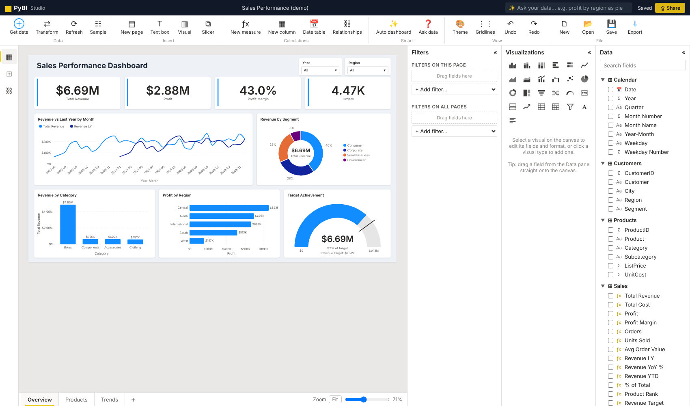
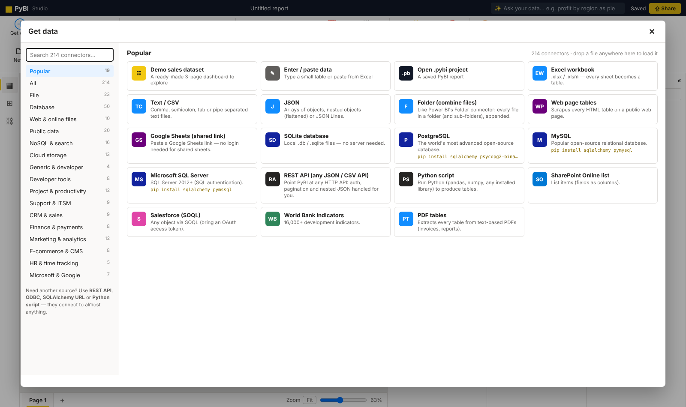
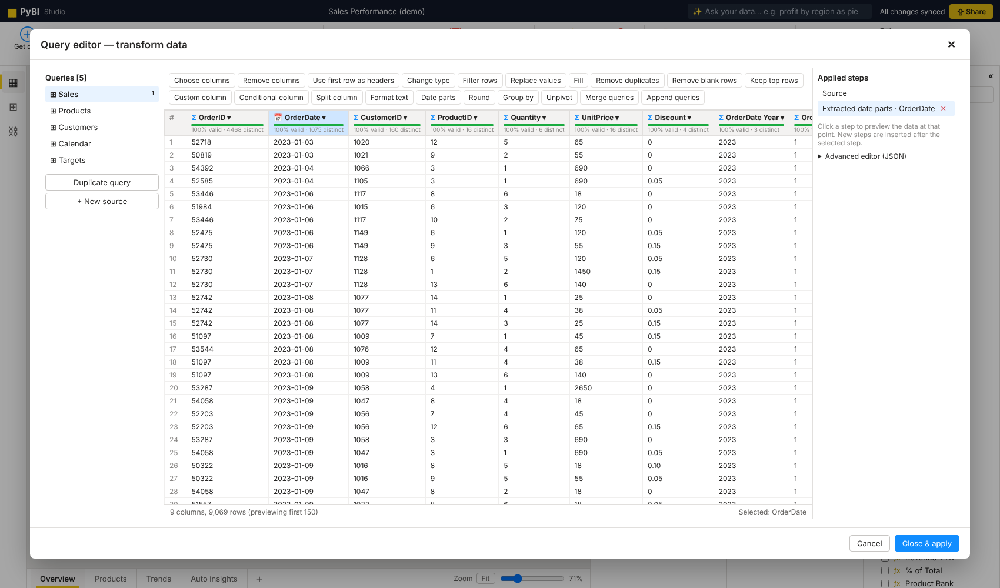
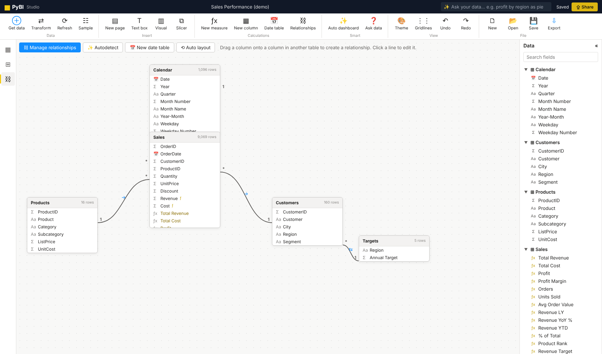

Connect data, shape it, model it with DAX, and build interactive dashboards. Share a live link on your network, or export to PNG, PowerPoint, PDF and interactive HTML. Free, and nothing to sign up for.
Free · MIT licence215 connectors25 visualsWindows · macOS · Linux · ChromeOS
127.0.0.1:8050 · PyBI Studio

215 connectorsExcel, CSV, Parquet, 50 databases, cloud storage, 70+ SaaS apps, public data, REST, GraphQL and Python.
Query editorPower Query–style applied steps with live preview: types, filters, splits, merges, appends, group by.
Model and DAXStar-schema relationships, a date table, and measures with CALCULATE, time intelligence and iterators.
25 visualsCharts, cards, KPI, gauge, waterfall, treemap, tables, matrices and slicers that cross-filter.
Smart toolsAsk your data in plain English, build a page with Auto dashboard, add a smart narrative.
Share and exportA live read-only link for your network; PNG, PowerPoint, PDF or one offline interactive HTML file.
Created by Muhammad Rafay Shaikh, from Pakistan. New to BI? Start with the 12-step course.
Getting started
Download the desktop app
The easiest way to use PyBI. Each download includes its own Python and every library, so there is nothing else to install. Open PyBI from the ر icon: it starts on your computer and opens in your browser. It updates itself when a new version is released.
Open PyBI-Setup.exe and click Next → Next → Install. No admin rights needed. If Windows says "Windows protected your PC", click More info → Run anyway.
Mac
Open the .dmg and drag PyBI to Applications. The first time, if the Mac says PyBI "cannot be opened", go to System Settings → Privacy & Security → Open Anyway. Apple menu → About This Mac shows whether you have an Apple chip or Intel.
Chromebook
Turn on Linux, then paste one command into the Terminal. Step-by-step below.
Ubuntu / Debian / Mint
Run curl -fsSL https://rafay183.github.io/pybi/install.sh | bash, or double-click the downloaded .deb. Start it from your app menu or with pybi-desktop.
Other Linux
Run chmod +x PyBI-Linux-x86_64.AppImage, then double-click it.
Install on a Chromebook
PyBI runs in your Chromebook's built-in Linux. Recent ChromeOS versions no longer install .deb files by double-clicking, so use this one command instead. It picks the right version for Intel/AMD or ARM Chromebooks, checks the download and installs it.
Turn on Linux (one time): Settings → About ChromeOS → Developers → Linux development environment → Turn on. Accept the defaults and wait a few minutes. On older ChromeOS it is under Settings → Advanced → Developers.
Open the Terminal: open the app launcher, search for Terminal, and click penguin.
Paste this command (Ctrl+Shift+V in the Terminal) and press Enter:
Open PyBI: search for PyBI in the app launcher (it is in the Linux apps folder). It opens in Chrome.
To update later, PyBI installs new versions by itself, or you can run the same command again. School or work Chromebooks may have Linux turned off by the administrator; then ask them to allow it, or use PyBI on another computer and open its network link in Chrome.
What the app does
A small PyBI window shows the status, with Open PyBI, Restart and Stop. Your projects live in Documents/PyBI. When a new version is out, the window offers Update now, verifies the download and keeps your projects and settings.
Getting started
Install with pip
For Python users, on any platform. Needs Python 3.10 or newer. The install name is pybi-ray, the command is pybi, and the import is import pybi.
pip install pybi-ray
pybi run # opens PyBI Studio at http://127.0.0.1:8050
pybi demo # opens with a ready-made 3-page sales dashboard
Some connectors need a database driver. Install drivers in groups with extras, or everything at once:
Install pybi-ray. The plain name pybi on PyPI is an unrelated project.
Getting started
Quickstart in 2 minutes
Open PyBI (the desktop app, or pybi run). The studio opens in your browser.
In the ribbon, click Data → Sample. PyBI loads a demo dataset and a 3-page dashboard.
Click any bar or slice: every other visual filters to it. Ctrl+click to select several.
Type a question in the Ask your data box at the top, for example top 5 products by profit as bar, and press Enter.
Click ⇪ Share for a link colleagues on your Wi-Fi can open, or File → Export for PNG, PowerPoint, PDF or interactive HTML.
To learn every part properly, with your own data, follow the Learn course.
Getting started
Tour of the studio
If you know Power BI Desktop, you will recognise the layout.
Ribbon group
Buttons
Data
Get data · Transform (query editor) · Refresh · Sample
Insert
New page · Text box · Visual · Slicer
Calculations
New measure · New column · Date table · Relationships
Smart
Auto dashboard · Ask data
View
Theme · Gridlines · Undo · Redo
File
New · Open · Save (.pybi) · Export
Three views on the left edge: ▦ Report (design pages), ⊞ Table (see the data) and ⛓ Model (relationships).
Panes on the right: Visualizations (visual type, field wells, formatting), Fields (your tables, columns and measures) and Filters (this visual, this page, all pages).
Ask your data box at the top, the ⇪ Share button top-right, and page tabs along the bottom.
Learn
Business intelligence with PyBI, step by step
You will build a complete sales dashboard for a bicycle company from four CSV files, the same way you would with your own company's data. Each step teaches one BI skill and exactly where to click in PyBI.
The scenario
You are the analyst at a bike retailer selling Bikes, Accessories, Clothing and Components in five regions. Management asks: How much did we sell in 2025? Are we growing? Which regions and products drive profit? Are we on target? You have three years of order lines (9,069 rows) plus product, customer and target lists.
You need: PyBI (the app or pip install pybi-ray) and about 90 minutes. No coding and no BI experience required.
1
Frame the business questions
BI skill: requirements · 10 min · no clicks yet
Goal: turn "make us a sales dashboard" into specific questions, each answered by one number.
Most failed dashboards fail before anyone opens a BI tool: lots of charts, no answers. Write down what management needs to decide and which number tells them.
Business question
KPI (measure)
Broken down by
Visual
How much did we sell?
Total Revenue
Year
Card
Are we making money?
Profit, Profit Margin
Year, Category
Cards, matrix
Are we growing?
Revenue vs Revenue LY
Month
Line chart
Where do sales come from?
Total Revenue
Region, Category
Bar chart, donut
What sells best?
Total Revenue, Units Sold
Product
Bar chart, table
Are we on target?
Revenue vs Revenue Target
Year
KPI or gauge
BI concept: KPI
A Key Performance Indicator is one number tied to a goal, with a definition, a time frame and a comparison. "Revenue" is a figure; "2025 revenue vs 2024" is a KPI.
Checkpoint: you can name the audience and the six questions above, each with its KPI.
2
Open PyBI and get the practice data
5 min
Goal: PyBI running, and the four practice files on your computer.
Open PyBI from its icon (or run pybi run). The studio opens in your browser with an empty report.
A fact table has one row per event (here, an order line) with numbers you add up. Dimension tables have one row per thing (a product, a customer) with descriptions you group and filter by. Spotting which is which makes the model in step 5 easy.
3
Load the data
BI skill: data ingestion · 10 min
Goal: four tables in the Fields pane.

Get data: search 215 connectors
Click Data → Get data in the ribbon.
Search for Text / CSV and open it.
Choose Sales.csv. PyBI shows a preview of the first rows. Check the columns look right, then click Load.
Repeat for Products.csv, Customers.csv and Targets.csv.
Click ⊞ Table view on the left to browse each table.
With your own data
For an Excel workbook or a database, the connector opens a Navigator where you tick the sheets or tables to load. PyBI remembers how each source was connected, so Data → Refresh pulls fresh data later and replays your cleaning steps.
Checkpoint: the Fields pane lists Sales, Products, Customers and Targets. Table view shows Sales with 9,069 rows.
4
Clean the data in the query editor
BI skill: data preparation (the Power Query stage) · 10 min
Goal: correct data types, and a cleaning recipe that reruns on every refresh.

Query editor: applied steps on the right, column quality bars above each column
Click Data → Transform and pick the Sales query.
Check each column's type in its header. OrderDate must be a date and Discount a decimal number. If one is wrong, use Change type on that column.
Look at the quality bar above each column: green is valid, red is errors, grey is empty. The practice data is clean, so every bar is green.
Each change appears in Applied steps. Click a step to see the data as it was at that point; remove a step to undo it.
Click Close & apply.
Trap: duplicate OrderIDs are real
OrderID repeats because one order can contain several products, one row per product. Remove duplicates on OrderID would delete real sales and understate revenue. Always ask "what does one row mean?" before removing duplicates.
BI concept: repeatable preparation
Cleaning in a query editor, rather than by hand in Excel, means next month's file gets exactly the same treatment when you click Refresh. The steps are saved inside your .pybi project.
Checkpoint: Sales still has 9,069 rows, and OrderDate shows as a date.
5
Build the data model
BI skill: star schema · 10 min
Goal: filters on Region, Category or Year flow through to the sales numbers.

Model view: Sales in the middle, dimensions around it
Click Calculations → Date table. Base it on Sales[OrderDate] and name it Calendar. PyBI creates one row per day with Year, Quarter, Month, Year-Month, Month Name and Weekday, and relates it to Sales.
Open ⛓ Model view. Drag Sales[ProductID] onto Products[ProductID], and Sales[CustomerID] onto Customers[CustomerID]. (Or use Calculations → Relationships and Autodetect.)
Check each line reads many-to-one (many sales, one product) with single cross-filter direction.
Leave Targets unrelated for now. It has one row per region, while Region lives on Customers; you will use it through a measure in step 7.
BI concept: star schema
Put the fact table in the middle and dimensions around it, each joined by one key. This keeps measures correct and fast. Avoid joining dimensions to each other, and use both-direction cross-filtering only when you need it.
Checkpoint: Model view shows three lines into Sales: from Products, Customers and Calendar.
6
Add calculated columns
BI skill: row-level calculations · 5 min
Goal: Revenue and Cost on every sales row.
The data has quantity, price and discount, but no revenue. Click Calculations → New column, choose table Sales, and add these two columns:
RELATED follows the relationship from step 5 to fetch each product's unit cost. Without that relationship this formula would fail.
BI concept: column or measure?
A calculated column is computed once per row and stored. Use it when you need the value on each row, for example to filter on it. A measure (next step) is computed for whatever is filtered right now. Totals, averages and percentages belong in measures.
Checkpoint: Table view shows Revenue and Cost on Sales.
7
Write measures: your KPIs
BI skill: DAX · 15 min
Goal: every KPI from step 1, defined once, with a number format.
Click Calculations → New measure for each line. Build the simple ones first; the rest reuse them by name in square brackets.
Total Revenue = SUM(Sales[Revenue])
Total Cost = SUM(Sales[Cost])
Profit = [Total Revenue] - [Total Cost]
Profit Margin = DIVIDE([Profit], [Total Revenue])
Orders = DISTINCTCOUNT(Sales[OrderID])
Units Sold = SUM(Sales[Quantity])
Revenue LY = CALCULATE([Total Revenue], SAMEPERIODLASTYEAR('Calendar'[Date]))
YoY Growth = DIVIDE([Total Revenue] - [Revenue LY], [Revenue LY])
Revenue YTD = TOTALYTD([Total Revenue], 'Calendar'[Date])
% of Total = DIVIDE([Total Revenue], CALCULATE([Total Revenue], ALLSELECTED(Sales)))
Revenue Target =
VAR yearly = SUM(Targets[Annual Target])
VAR years = DISTINCTCOUNT('Calendar'[Year])
RETURN yearly * years
Set the format in the measure editor: currency for money, percent for Profit Margin, YoY Growth and % of Total, whole number for Orders and Units Sold.
BI concept: always DIVIDE
DIVIDE(a, b) returns blank instead of an error when b is zero, for example a month with no sales. It also computes margin from totals, so a $50 order cannot weigh as much as a $5,000 one.
Checkpoint: put Total Revenue on a card and filter Calendar Year to 2025: $2,465,861. Profit Margin for 2025 is 43.0% and Orders is 1,684.
8
Create visuals
BI skill: choosing the right chart · 15 min
Goal: one visual per question, headline numbers at the top.
Click Insert → Visual, pick the type in the Visualizations pane, then drag fields from the Fields pane into its wells. Drag the corners to resize; guides help you align.
Visual
Type
Fields to drag in
Four headline numbers
Card (×4)
Total Revenue · Profit · Profit Margin · Orders
Trend vs last year
Line chart
Category: Calendar[Year-Month] · Values: Total Revenue, Revenue LY
Revenue by region
Clustered bar
Category: Customers[Region] · Values: Total Revenue
Category share
Donut
Category: Products[Category] · Values: Total Revenue
Detail
Matrix
Rows: Products[Category], Products[Product] · Columns: Calendar[Year] · Values: Total Revenue
BI concept: pick the chart from the question
Change over time → line. Comparing categories → bar, sorted by value. Share of a whole with few parts → donut. Exact values → table or matrix. Put the answer top-left, the explanation in the middle and the detail at the bottom.
Checkpoint: sort the region bar chart by value. With 2025 selected, Central leads with about $744K and West is last with about $112K.
9
Add interactivity
BI skill: self-service exploration · 10 min
Goal: managers answer their own follow-up questions.
Insert → Slicer with Calendar[Year], style dropdown. Add a second slicer with Customers[Region], style tiles.
Click a bar in the region chart: every other visual filters to that region. Ctrl+click adds more; click again to clear.
Open the Filters pane. Add Products[Category] under Filters on this page. Filters can apply to one visual, this page, or all pages.
Hover a visual and use focus mode to open it full size.
BI concept: filter context
The same measure gives different answers in different places because each place has its own filters: the slicers, the bar or cell it sits in, and any clicked selections. Total Revenue in the "North" bar means revenue where Region = North and Year = the slicer's year. Understanding this is the key to every BI tool.
Checkpoint: choose Region = North and Year = 2025: the cards show North's figures (about $618K revenue) and every chart follows.
10
Pages, design and smart tools
BI skill: report design · 10 min
Goal: a polished multi-page report where each page has one job.
Insert → New page, and name it Products from its page tab.
Add a title with Insert → Text box, and a short description of what the page answers.
View → Theme: pick one of six themes, including dark.
Type top 5 products by profit as bar in Ask your data. PyBI builds the visual; refine it in the Visualizations pane.
On a new page, try Smart → Auto dashboard: PyBI builds a full insight page from your model. Keep what helps.
Add a Smart narrative visual for an automatically written summary of the numbers on the page.
One page, one question: Overview (how are we doing), Products (what sells), Regions (where).
One accent colour for what matters; everything else neutral.
Every title says what it shows and in which units.
Checkpoint: the report has at least two pages with titles, and an Ask-your-data visual.
11
Save, share and export
BI skill: distribution · 10 min
Goal: the dashboard in front of the people who need it.
File → Save to keep a .pybi project: data, steps, model and report in one file.
Click ⇪ Share and copy the link. Anyone on the same Wi-Fi or office network can open the live, read-only dashboard; it updates as you edit. Viewers can use slicers and cross-filtering but cannot edit.
File → Export for meetings and email:
Export
Best for
Interactive?
PNG (this page or all pages)
WhatsApp, email, quick screenshots
No
PowerPoint (.pptx)
Monthly review meetings
No
PDF document
Printing, archives
No
Interactive HTML
Sending the whole dashboard to anyone; opens offline in any browser
Yes: slicers and cross-filtering work
Before you share
The share link reaches everyone on that network, and an exported HTML file contains the data. Share only what the recipients may see. Use pybi run --private to turn the network link off.
Checkpoint: a colleague opens your Share link on their phone, and you have a .pptx and an .html export.
12
Turn visuals into decisions
BI skill: analysis and storytelling · 15 min
Goal: read the dashboard like an analyst and write the summary management actually reads.
Question
What the practice data shows (2025)
So what?
How much did we sell?
$2.47M revenue, $1.06M profit
Baseline for 2026
Are we growing?
+5.1% vs 2024 (2024 grew +25%)
Growth is slowing sharply
On target?
$2.47M vs $2.44M target: 101%
Just made it overall
Where?
Central $744K leads; West $112K
Compare each region with its target in the Targets table: South ($410K vs $820K) reached only half
What sells?
Bikes are 72% of revenue; E-Bike Volt alone $555K
Revenue depends on one category
Making money?
Margin steady at 43%; Bikes 38.7% vs Accessories 59.6%, Clothing 56.8%
The biggest category has the lowest margin
The three-line executive summary
Headline: "2025 revenue reached $2.47M, 101% of target, but growth slowed to 5% from 25%."
Driver: "Bikes bring 72% of revenue at the lowest margin, and the South region delivered only half its target."
Action: "Grow high-margin accessories and clothing alongside bike sales, and review the South plan."
BI concept: descriptive → diagnostic → prescriptive
Descriptive says what happened (growth slowed). Diagnostic says why (one category, one weak region). Prescriptive says what to do. Your dashboard does the first, slicers and drill-downs support the second, and your summary delivers the third.
Practice exercises
Add a measure Profit per Unit = DIVIDE([Profit], [Units Sold]) and show it by product. Which product earns most per bike sold?
Build a KPI visual of Total Revenue against Revenue Target, by year.
Add a Customers[Segment] slicer. Which segment has the highest margin?
Rank products with Product Rank = RANKX(ALL(Products), [Total Revenue]) and show the top 5 in a table.
Replace the CSVs with real data from your work, click Refresh, and see which visuals still answer the questions.
Guides
Get data and connectors
Open Data → Get data to search the catalog. Each connector shows a form and a live preview; databases, workbooks, folders and buckets add a Navigator to pick tables. Sources remember how they were connected, so Refresh re-pulls fresh data while keeping your query steps.
Connectors marked with a driver note tell you the exact pip install command to run.
Passwords and tokens are stored only on your computer in ~/.pybi/credentials.json, never inside .pybi files.
SaaS connectors use the vendor's REST API with a token you provide. If an endpoint changes, override it under Advanced options.
Query editor steps
Open with Data → Transform. Every action becomes an applied step with a live preview; steps replay on refresh and are saved in the project. A JSON advanced editor shows the full recipe.
Drag a column onto another to create a relationship; Autodetect finds matching keys.
Relationships are many-to-one with single or both cross-filter direction, and can be active or inactive.
Calculations → Date table creates and relates a calendar in one click. Column options include Sort by column (for example Month Name by Month Number) and Hide in report view.
DAX formulas
Measures and calculated columns use a DAX-style language. Columns are written Table[Column], measures [Measure], and tables with spaces or reserved names in quotes, like 'Calendar'[Date]. Use VAR … RETURN to name steps.
Ask your data: type a question such as revenue by region as pie or top 5 products by profit.
Auto dashboard: builds a full insight page from your model.
Smart narrative: a text visual that writes a summary of the numbers in view.
Share on your network
Click ⇪ Share for a live, read-only link (/view) that anyone on the same Wi-Fi or office network can open. It refreshes as you edit. Viewers can use slicers, cross-filtering and focus mode, and download images, but cannot edit: all editing stays on your computer. The first time, your firewall may ask to allow PyBI on the network. Start with --private to turn sharing off.
Export
File → Export offers: this page or all pages as PNG, PowerPoint (.pptx), PDF, interactive HTML (one offline file with data, slicers and cross-filtering), the project as .pybi, and Print. From the command line: pybi export report.pybi -o dashboard.html.
Guide
Open Power BI files (.pbix)
PyBI opens Power BI Desktop reports directly. Click Open (or Get data → Power BI file, or drop the file on the Get data window) and pick a .pbix or .pbit file. PyBI brings over:
Pages with their size, background colour or image, and hidden/tooltip pages (hidden in the viewer).
Visuals at the same position and size: column, bar, line, area, combo, waterfall, ribbon, scatter, pie, donut, treemap, funnel, gauge, card, multi-row card, KPI, table, matrix, slicers, text boxes, shapes and images, with their fields, titles, data labels, legends and colours.
Filters on the report, pages and visuals, and the values selected in slicers.
The data model: every table with its data, relationships (direction and active/inactive), DAX measures with their number formats, calculated columns, hidden fields and sort-by columns.
The theme colours of the report.
Reading the data inside a .pbix needs the pbixray package. The desktop app includes it; with pip, install it with the pbix extra:
pip install "pybi-ray[pbix]"
pybi run "Sales Report.pbix" # open it in the studio
pybi convert "Sales Report.pbix" # or save it as Sales Report.pybi
After the import PyBI lists anything it could not carry over exactly, so you know what to check. Not supported yet: maps, custom visuals from AppSource, Q&A, decomposition tree and key influencers (shown as grey placeholders in the same spot), buttons and bookmarks, Top N and relative-date filters, row-level security, and DAX functions the PyBI engine does not have yet. Reports with a live connection to a Power BI dataset or Analysis Services keep their data on the server, so only the layout is imported.
Guide
Sign in with GitHub
Click Sign in with GitHub at the top right of the studio.
Choose whether PyBI may use your private repositories (needed for private data and private saved reports).
No GitHub account? Click No, help me create one: PyBI opens github.com/signup and lists each step (email, password, username, the emailed launch code, the Free plan).
PyBI shows a one-time code such as ABCD-1234. Click Open GitHub, paste the code, check that it says PyBI and click Authorize. PyBI notices within seconds and shows your name and picture.
What you can do once signed in: load GitHub data (issues, pull requests, commits, releases, Actions runs, files) without a personal access token; Save report to GitHub and Open report from GitHub (your own pybi-reports repository, with version history); and Publish dashboard as a web page with GitHub Pages.
Why it is safe: PyBI uses GitHub's device sign-in, so your password is only ever typed on github.com and PyBI contains no secret. The access key stays on your computer only, in the system keychain (with pip install keyring) or in ~/.pybi readable only by you, and never goes into report files, exports or the network view. Other websites cannot send commands to your studio. Sign out from the account menu at any time, and revoke PyBI completely under GitHub → Settings → Applications.
Reference
Command line
pybi run # start the studio (network view link enabled)
pybi run sales.xlsx # start with a data file loaded (csv, xlsx, json, parquet)
pybi run my_report.pybi # open a saved project
pybi run report.pbix # open a Power BI report (pip install "pybi-ray[pbix]" for its data)
pybi convert report.pbix # convert a Power BI report to report.pybi
pybi run --private # only this computer can connect
pybi run --port 9000 --no-browser
pybi run --demo # start with the demo data and dashboard
pybi demo # same as run --demo
pybi export my_report.pybi -o dashboard.html # headless export to interactive HTML
pybi version
python -m pybi run # same as pybi run
The desktop app runs pybi run --no-browser on a free port (8050 or the next free one) and opens the browser itself. Its own options: PyBI --no-browser, --check-updates, --version (Linux: pybi-desktop).
Reference
Python and Jupyter
Open the studio with pandas DataFrames already loaded; each keyword becomes a table:
import pandas as pd
import pybi
sales = pd.read_csv("sales.csv")
products = pd.read_excel("products.xlsx")
pybi.run(Sales=sales, Products=products) # opens the studio with these tables
Reference
How it works
Python (Flask and pandas) serves the studio, loads and transforms data, saves .pybi projects (a zip of raw data, query steps and the report) and builds PPTX, PDF and HTML exports.
The analytics engine (filter context, relationships, the DAX language) and the d3 visuals run in the browser, so the studio, the network view and exported HTML behave the same.
Autosave keeps the current project in ~/.pybi/autosave.pybi.
Data is held in memory: comfortable up to a few million rows, depending on your computer.
Reference
Security
The studio listens on your network so the share link works. Other computers can only view; every editing API is limited to your own computer. --private turns network access off.
The custom-column step evaluates pandas expressions. Only open .pybi files from people you trust.
Desktop updates are downloaded from this project's GitHub Releases and checked against a SHA-256 checksum before installing.
Report vulnerabilities privately as described in SECURITY.md.
Reference
Troubleshooting
Windows: "Windows protected your PC"
The installer is not code-signed yet. Click More info → Run anyway.
Mac: "PyBI cannot be opened" or "Apple could not verify"
Open System Settings → Privacy & Security, scroll down and click Open Anyway. You only need to do this once.
Chromebook: "Debian package is no longer supported" or the .deb does not install
Recent ChromeOS versions removed installing .deb files from the Files app. Install with one command in the Linux Terminal instead: curl -fsSL https://rafay183.github.io/pybi/install.sh | bash. See Install on a Chromebook.
Chromebook: PyBI opened but Chrome cannot reach the page
Open http://penguin.linux.test:8050 in Chrome instead of 127.0.0.1. If it still does not load, add port 8050 under Settings → Developers → Linux → Port forwarding.
Linux: the AppImage does not start
Make it executable with chmod +x. On very old systems, use the .deb instead.
Colleagues cannot open the Share link
They must be on the same network, and your firewall must allow PyBI. Guest Wi-Fi often blocks device-to-device traffic. If you started with --private, sharing is off.
A chart shows the same number on every bar
The table you group by is not related to the fact table. Check Model view and add the relationship; both key columns need the same type.
Time-intelligence measures are blank
TOTALYTD and SAMEPERIODLASTYEAR need a date table related to your facts, and the visual's axis must use the date table's columns.
"Port 8050 is already in use"
Another program uses the port. Run pybi run --port 9000. The desktop app picks the next free port automatically.
Where are my logs?
Desktop app logs: Windows %LOCALAPPDATA%\PyBI\logs, Mac ~/Library/Application Support/PyBI/logs, Linux ~/.local/share/pybi/logs. The PyBI window has a Logs link.
Community
Contributing
PyBI is built in the open. Connectors tested against real accounts, visuals, DAX functions, docs and translations are all welcome.